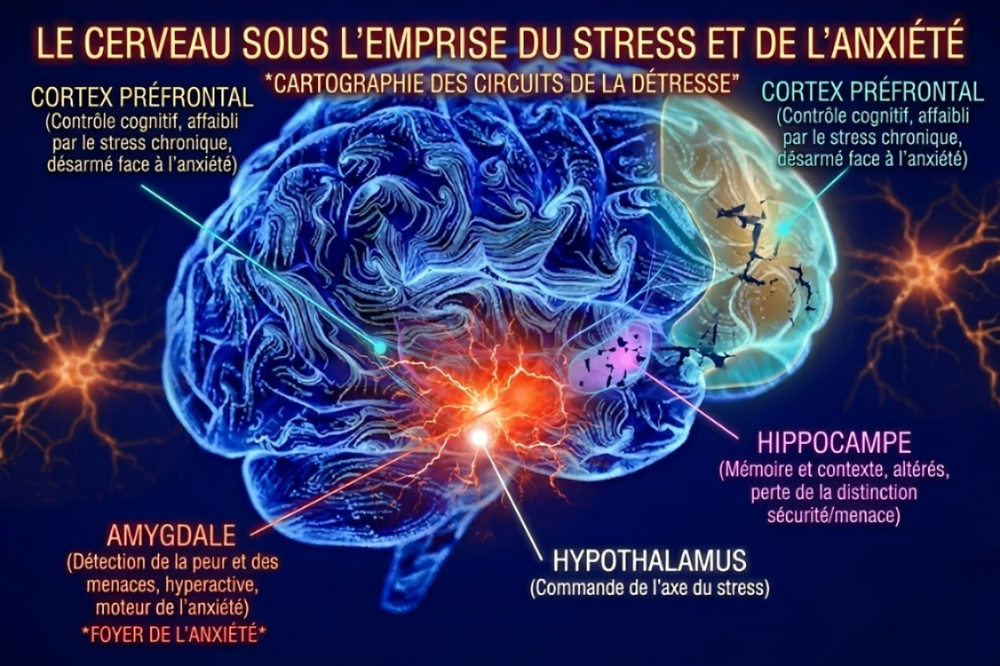

La santé mentale correspond à l’état de bien-être émotionnel, psychologique et social. Elle influence la manière dont nous pensons, ressentons et agissons.
Chez les adolescents, cette période est marquée par de nombreux changements : le corps, les émotions, les relations et la pression scolaire.
Selon l’Organisation mondiale de la santé (OMS), la santé mentale ne signifie pas seulement l’absence de troubles, mais aussi la capacité à faire face aux difficultés de la vie.

Le stress est une réaction normale face à une situation difficile. Il peut être utile, mais s’il est trop intense ou fréquent, il devient problématique.
Conséquences possibles :
L’anxiété est une peur ou une inquiétude excessive. Elle peut apparaître même sans danger réel et durer dans le temps.
Si les difficultés continuent, il est important de consulter un professionnel.